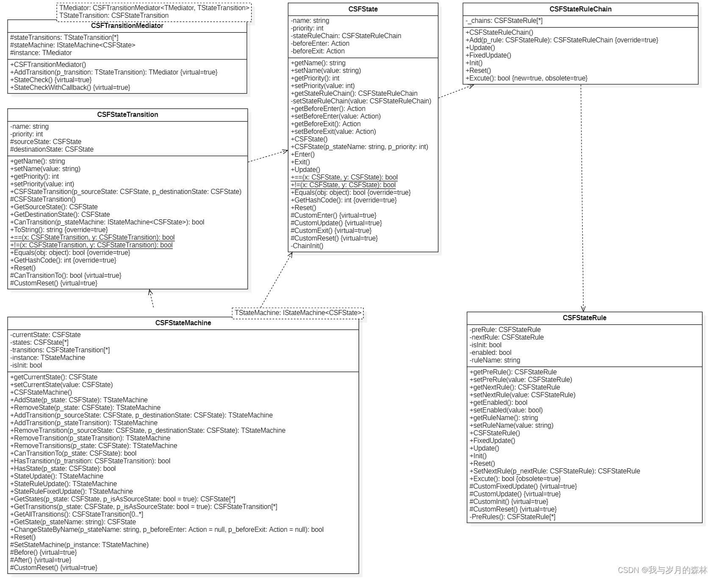
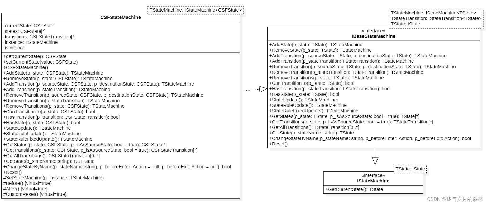
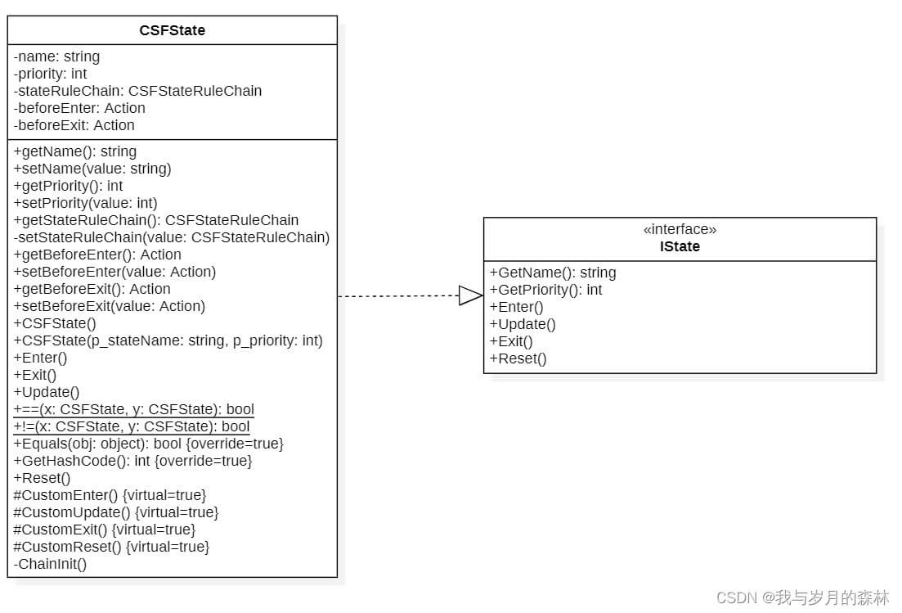
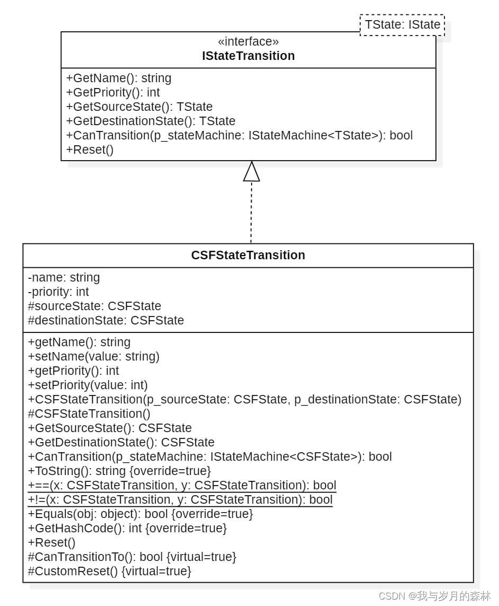
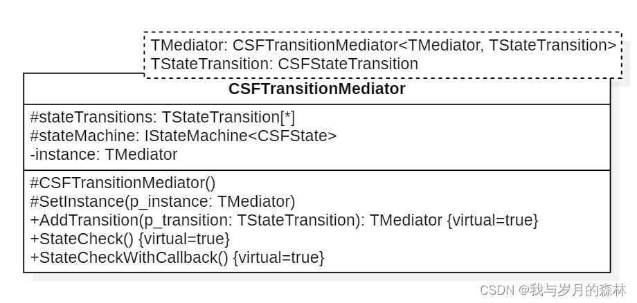
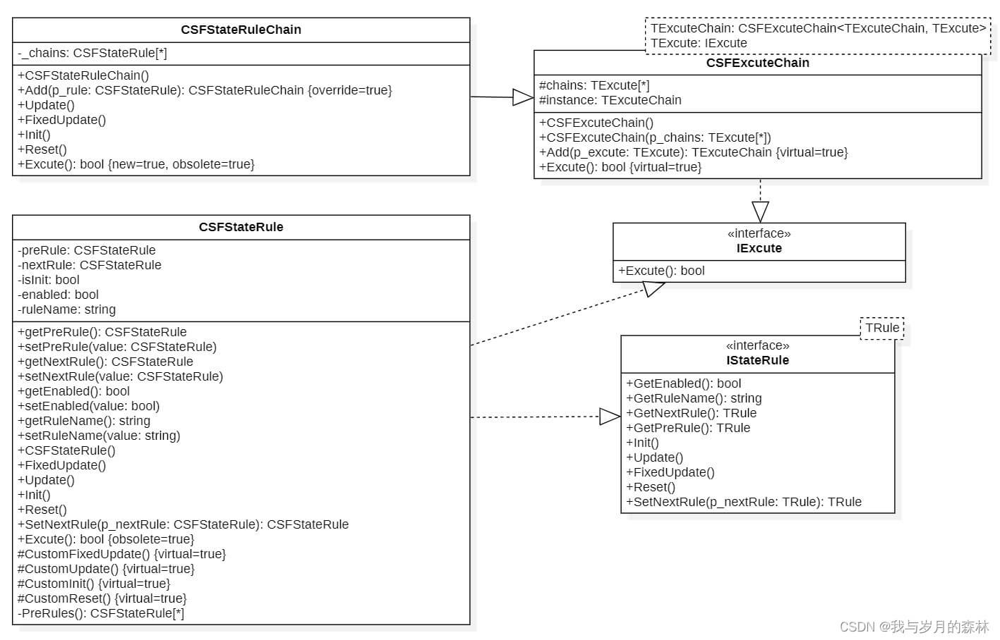
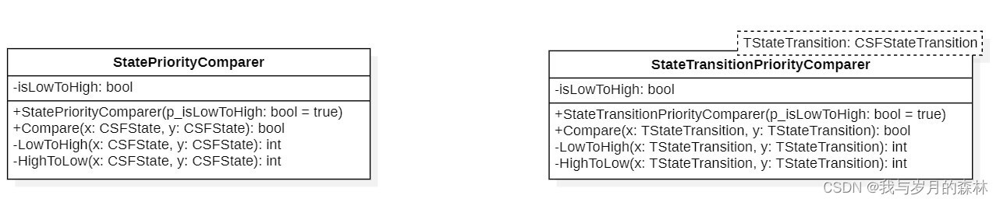

尝试自主打造一个有限状态机（一）
本系列文章要求读者具备一定的C#编程基础，同时对接口和抽象类、继承关系、设计模式以及面向对象等知识有所了解，在文章中我会对这些知识进行简要的阐述，对于描述有误的地方敬请指正。
前言
我们都知道Unity有自带的有限状态机Animator，它的功能非常强大，为了探索它背后的原理，我开启了这个系列的文章，尝试通过自主打造一个有限状态机来理解Animator的工作原理，同时我会将这个状态机应用于实际，进而测试它是否能够正常运转以及它的性能如何，最后针对测试结果去探索优化的方案。
词表
| 名称 | 阐述 |
|---|---|
| 状态转换路径 | 以某个状态作为源状态，另一个状态作为目标状态，从源状态到目标状态的过渡关系称之为状态转换路径。 |
理论上的状态机
我们从理论上的状态机去分析一个通用状态机的组成部分，进而探索状态机的设计原理和技巧。所以我们需要明确以下五个问题的答案：
状态机是什么？
状态机有什么作用？
状态机的组成部分有哪些？
状态机的工作原理是什么？
应该怎么去设计一个状态机？
状态机的定义
有限状态机（英语：finite-state machine，缩写：FSM）又称有限状态自动机（英语：finite-state automaton，缩写：FSA），简称状态机，是表示有限个状态以及在这些状态之间的转移和动作等行为的数学计算模型。状态机的应用非常广泛，在编程中的应用仅作为其中一部分，本文不作详细阐述。具体请参考有限状态机和自动机编程。
在本系列文章中，我们可以将状态机理解为一个管理状态和状态过渡的机器，状态机需要结合当前状态和输入来检测是否能够过渡到下一个状态，当前状态可能对应多个目标状态，但是在一次检测周期中有且仅有一个目标状态可能成为下一个状态，当前状态到目标状态之间的过渡条件是事先确定好的，那么在一次周期内会对当前状态所有的过渡进行一次检测，一旦满足过渡条件则进入下一个状态。
状态机的作用
从状态机的定义我们就可以明确状态机是用来管理状态和状态过渡的系统，尤其是对于状态数量多或状态过渡关系复杂的情况，状态机的优势就更加突显。在开发过程中我们难免会遇到一种情况——使用大量的if-else系列语句来完成一些业务逻辑的开发，当然这往往只是简单的情况，在游戏开发中如果我们对角色控制的开发不采用状态机，那么就需要大量的变量作为锁并且使用大量的if-else语句以防止角色从某个状态跳转到其它某些状态，随着状态数量的增多，代码的可读性下降，而出错率也会随之提升，同时后续的扩展或者维护将变得艰难。（在我第一次游戏开发中就出现过这个问题）
状态机的组成
一个状态机至少应该包括状态、状态过渡关系、状态过渡参数和状态机系统四个部分，除此之外还可以根据具体的应用为状态机添加组成部分，状态和状态过渡关系通常作为非静态实体类分别记录状态信息和状态过渡信息，而状态机往往需要复用以及适应更加广泛的应用所以也需要作为一个非静态实体类，如果状态过渡参数的种类较多并且要求统一也可以单独为一个非静态实体类记录状态过渡参数的信息。静态类与非静态类的区别在于，静态类无法为之创建实例对象，它是密封类且无法被继承，具体请参考Static Class。
状态机的工作原理
状态机理应具备一个起始状态，当启动状态机时，对所有以起始状态为源状态的状态转换路径进行检测，若满足过渡条件则从源状态过渡到目标状态，状态机完成相关交接任务后更新当前状态为目标状态，重复上述过程。对于有退出状态的状态机，当状态机的当前状态为退出状态时则根据退出状态中的执行逻辑完成对应的任务，而对于没有明确的退出状态的状态机而言将会不断运转直至人为调用状态机的停止方法才会结束运转。
状态机的设计
从状态机的组成我们可以明确状态类、状态转换路径类和状态机类是必不可少的。那么是否还存在其它类呢？这个就需要看我们如何划分这三个类的工作了，实际上在程序设计中类应该尽可能遵循单一职责原则(SRP)，在这个基础上我们先尝试对这三个类的工作进行探索。状态类用于记录状态信息作为状态实体类，状态类应该包括四个基本方法，分别是进入该状态时执行的方法，处于该状态时执行的方法，退出该状态时执行的方法以及对状态进行重置的方法，除此之外状态之间可能还需要进行比较，所以还可以有状态的比较方法。状态转换路径类用于记录两个状态之间的过渡关系，应该包括获取源状态和目标状态的方法，状态转换路径重置的方法，状态转换路径的比较方法，同时对于状态转换路径是存在一个转换条件的，所以还应该包括一个用于检测该状态转换路径能否转换的方法。状态机类则作为整个状态机的系统类，负责管理所有的状态和状态转换路径以及协调状态和状态转换路径之间的对接工作，我们可以对状态和状态转换路径进行添加和删除，可以判断当前状态能否转换到指定的状态，判断该状态机类中是否存在指定的状态或状态转换路径，对当前状态的方法调用，状态机类的重置以及当前状态改变前后执行的方法。状态机应该能够独立运行，所以不应向外暴露不必要的接口避免其它调用者干预其正常运转。例如一个电梯，使用者需要按下对应方向键来告知电梯自己需要使用它以及需要向上还是向下，那么电梯就会根据使用者的要求来运转，但是其中具体的运转逻辑不是使用者所关心的，对于状态机而言也是如此，我们只需要暴露状态机的一些基本功能即可。
状态类、状态转换路径类、状态机类具体的定义可能还需要结合具体的应用场景和开发环境，例如在Unity3D中我们通常需要将状态的刷新方法放在MonoBehaviour的Update或FixedUpdate中执行，此时我们就需要暴露状态机类中的刷新方法的接口，但是对于其它某些应用场景或开发环境，刷新方法的接口也可以不暴露在外，而是通过一些内在的机制，在状态机类中自行调用，例如在状态机类中创建一个不终止的计时器，然后设置对应的时间间隔，使得刷新方法能够以时间间隔为周期反复执行，那么此时调用者只需要启动状态机，状态机则会自动启动计时器开始执行刷新方法。对于状态类和状态转换路径类，也并非有统一的定义标准，对于有些应用场景，状态中仅需要完成一次指定逻辑的执行则退出，不存在重复执行指定逻辑的需求，那么状态类中就并非一定需要刷新的方法。
所以对于状态机的设计，我们一方面要贴合实际应用，另一方面还应该遵循一些设计原则，避免让类变得臃肿，违反单一职责原则，可读性变差，扩展性变差和维护成本变高等问题。
示例（UML）
如图1所示是一个状态机的组成部分，它包括CSFStateMachine、CSFState、CSFStateTransition、CSFTransitionMediator、CSFStateRule和CSFStateRuleChain。

图2是CSFStateMachine的类设计，它实现了IBaseStateMachine接口，作为状态机的实体类。

图3是CSFState的类设计，它实现了IState接口，作为状态的实体类。

图4是CSFStateTransition的类设计，它实现了IStateTransition接口，作为状态转换路径的实体类。

图5是CSFTransitionMediator的类设计，这个类的作用是作为一个中介者或调停者，负责对以指定状态为源状态的所有状态转换路径进行检测。

图6是CSFStateRule和CSFStateRuleChain的类设计，CSFStateRule则是作为记录状态执行逻辑的实体类，而CSFStateRuleChain则是负责对CSFStateRule的实例进行统一管理。

图7这两个类并不作为状态机的组成部分之一，两个类的功能则是作为比较器分别负责状态优先级和状态转换路径优先级的比较。
